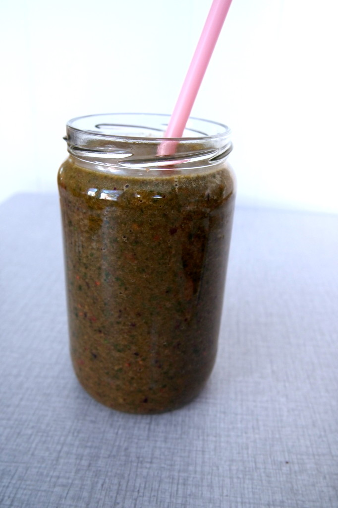

De Groene Meisjes houden van smoothies. En vooral van groene smoothies! Geweldig zijn ze, die groene vrinden. We drinken ze het liefst bij het ontbijt, want een betere start van je dag kan je je gewoon niet wensen. Een groot glas vol met vitamines om de dag te kunnen kickstarten, awww yeah! Trouwens, we hebben al van veel mensen gehoord dat een groene smoothie ideaal is voor mensen die niet van groente houden. Waarom? Omdat een bord groenten opeten misschien een hele opgave voor je is, maar een glas groene smoothie drinken is erg goed te doen. Daarbij komt dat je je groene smoothie zo zoet kan maken door er bijvoorbeeld een appeltje, gedroogde vijgen of dadels aan toe te voegen, dat je de groente amper nog proeft. Dus als je een regelrechte veggiehater bent, dan zou een groene smoothie nog wel eens jouw last resort kunnen zijn.
Maar vandaag willen we het hebben over ‘gevorderde’ groene smoothies. Smoothies die wel degelijk naar groente smaken: the real deal. Groen, groener, groenst, dat idee.
Wij zelf hebben eventjes moeten wennen. We zullen je vertellen hoe dat ging:
* Vroeger (een jaar of 3 geleden) liepen we door de stad en zagen we bij V&D een kraampje buiten staan. Verse smoothies! Lekker. We kozen voor een variant met yoghurt, aardbei en banaan.
* Later (een jaar of 2 geleden) stofte ik mijn bender maar weer eens af en experimenteerde ik met al het fruit dat ik lekker vond. Ananas, banaan, mango, rood fruit, noem maar op. Soms voegde ik sojayoghurt of melk toe.
* Nog iets later (een jaar geleden) begonnen we met groene smoothies. We voegden beetje bij beetje groente als spinazie, rucola en boerenkool aan onze fruitsmoothies toe. Hoewel we even moesten wennen, waren we toch wel meteen verkocht. Vooral spinazie en boerenkool doen het geweldig in smoothies!
* Tegenwoordig gooien we alles in onze Vitamix blender. Hele kroppen sla, hele stronken bleekselderij, peterselie, snijbiet.. alles verdwijnt in die machine. De smoothies worden alsmaar groener en gezonder en we vinden het heerlijk. Kortom: van die yoghurt-aardbei-banaan smoothie van V&D is weinig terug te vinden.
Overigens wil ik hiermee niet zeggen dat je geen smoothies bij V&D moet drinken hoor. We vinden het juist te gek dat je bij La Place nog kan kiezen voor een lekker fruitsapje!
Vandaag delen we een behoorlijk ‘pittig’ groene smoothie uit het toffe receptenboek “50 Groene Smoothies” met je. Let op, komt ie:
“Trio-green”
* 100 gram spinazie
* 50 gram sla naar keuze
* 50 gram bladeren van de snijbiet
* 2 appeltjes
* 150 gram kersen (ook lekker uit de vriezer, wordt je smoothie lekker fris van!)
* water naar behoefte
Blend eerst het fruit met wat water tot het een gladde massa is. Blend daarna de veggies erdoor en voeg nog water toe naar behoefte: meer water is dunner, minder water is dikker.
Supersimpel, superlekker!
En: wist je dat kersen een stof bevatten (anthocyanine) die ontsteking en pijn kunnen verminderen? Anthocyaninen zijn ook krachtige antioxidanten en helpen je dus tegen celschade te beschermen.
Zoals we al eerder aangegeven hebben, is het misschien eventjes wennen. Immers, je bent gewend aan wat zoetere smaken. Maar geloof me, over een tijdje wil je niet anders meer. Het drinken van een groene smoothie geeft je namelijk zoveel energie! Als ik ’s ochtends een groene smoothie gedronken heb en daarna op de fiets stap kan ik het niet laten om even heel hard “BAM!” door het huis te roepen. Je hebt een beeld? Nou, dat dus. Even serieus: ik heb oprecht het idee dat als ik ’s ochtends een stevige groene smoothie heb gedronken, ik de hele dag door meer energie heb. Een groene smoothie is trouwens ook een fantastisch anti-kater middel. En als je je niet zo lekker of fit voelt, of je hebt een griepje achter de rug, dan kunnen groene smoothies je net dat beetje extra boost geven, zodat je je weerstand snel weer op het oude niveau terug hebt.
Tot zover onze ode aan de groene smoothie. Denk jij na het lezen van dit verhaal: dit moét ik ook ervaren? Dan is het e-book 50 Groene Smoothies echt jouw ding. Vijftig recepten om mee aan de slag te gaan… moet genoeg zijn toch? Je bestelt het boek via bovenstaande link en voor €19,95 staat het op jouw tablet of computer. Heel veel groene-smoothie-plezier gewenst!
Wie van jullie durft een XXL supergreen groene smoothie aan?

{kind=link}
{kind=link}
Ik drink heel veel smoothies (maar dan inderdaad met fruit en yoghurt), maar heb nog nooit een groene smoothies geprobeerd! Deze klinkt wel heel heftig, maar misschien moet ik binnenkort toch ook eens wat spinazie er doorheen mikken!
Gewoon proberen Anne! En inderdaad, begin eerst gewoon lekker met spinazie (verse bladspinazie, ongekookt uiteraard) door je ‘bestaande’ smoothie en je zal merken dat dat prima gaat. Daarna kan je gaan ‘uitbreiden’!
oei dat is wel heeeel groen hahaha. Waar kopen jullie eigenlijk snijbiet? Ik ben al bij verschillende groentewinkels geweest en kan het gewoon niet vinden.
gewoon bij de natuurwinkel! Ekoplaza bijvoorbeeld.
Snijbiet in de bioplanet.
Oeh jeetje, ik vind het wel spannend. Ik heb tot nu toe zelfs nog nooit de ‘gewone’ groene smoothie aangedurfd.. Ik moet me er toch echt eens aan wagen, maar ik vind het oprecht een beetje eng. :P
Het klinkt wel ontzettend gezond!
Wat vinden jullie de meest toegankelijke groene smoothie die er is? (Niet echt in de strekking van dit artikel dus, maar misschien kan ik het vanaf daar opbouwen om toch ook ooit deze green trio aan te durven!)
:) Zeker, je moet het ook eventjes opbouwen. Kijk, het kan nog veel groener dan dit hoor. Met spirulina erin en alleen maar groenten en geen fruit, maar wij zijn ook nog een beetje aan het experimenteren natuurlijk.
De meest toegankelijke groene smoothie vind ik eentje met bladspinazie en veel fruit. Bijvoorbeeld: 2 handen bladspinazie, een beetje kokoswater (of gewoon water) en 2 bananen. Lekker om de bananen eerst even in te vriezen, dan wordt het lekker koud en fris. Of iets met rood fruit erdoor, werkt ook goed, want dan wordt het lekker zoet. Maar als groente zou ik absoluut spinazie aanraden. Dat is lekker zacht van smaak. Daarna kan je “door” naar rucola, boerenkool, andijvie, snijbiet…
Probeer het maar eens! Een vriendin van mij had nog nooit een groene smoothie gedronken en heeft het gisteren geprobeerd. Zij en haar zoon vonden het SUPERlekker. Dus echt, probeer het :)
Klinkt heel lekker eigenlijk. Zelf alleen nog maar smoothies met fruit gemaakt (zonder melk product, vindt ik frisheid door weggaan). Maar is het voor de ochtend niet veel werk?
Dat ligt er aan wat je gewend bent! Ik drink zelf elke ochtend een smoothie van versgeperst sap van 2 sinaasappels, diezelfde hoeveelheid ananassap, 2 handjes spinazie en 2 bananen. Ik heb het in 5-10 minuutjes geperst, geblend, in mijn glas geschonken en de blender weer schoon. Het opdrinken kost mij meer tijd: 15-20 minuten. Het is toch een aardige plons die je even naar binnen kiepert, en als ik te snel drink wordt ik misselijk. Als ik haast heb drink ik het op terwijl ik me opmaak, dat werkt ook prima!
Dat is zeker weer eens iets anders dan de spinazie-banaan combinatie :). Ik vind een extreem groene smoothie een beetje vergelijkbaar met gazpacho, dus als ontbijt zou ik het een beetje vreemd vinden denk ik. Mijn meest gewaagde combinatie bestond uit tomaten, selder, rucola, radijzen, een rood pepertje en appel. Het resultaat was dat je de appel niet proefde, maar het wel overheerlijk was (en een beetje té pikant ^^). Dus, we zullen maar eens een snijbiet zoeken, I’m up for the challenge :)
toch smaakt het wel heel anders hoor, want deze smoothie is – hoe groen ook – toch echt behoorlijk zoet. Maar goed, je kan natuurlijk een smoothie ook als lunch drinken! Of als tussendoortje..
Oei dit vind ik er niet al te smakelijk uit zien! Misschien in kleine stapjes overstappen naar een gevorderde versie…
hihi smaken verschillen ;)
Ik eet mijn groente en fruit liever heel of in een salade ofzo, haha. Ik ben niet zo’n smoothiefan, ik heb liever iets te kauwen :) Ik heb wel eens gelezen dat als je eten vloeibaar neemt, dat je langer vol zit, dat is dan wel een voordeel van zo’n smoothie.
Ik heb sinds een week een juicer, en mijn favoriete recept tot nu toe is: spinazie, aardbei, wortels en appeltjes!
mmmm!
Spinazie – peer – frambozen & banaan / ananas, komkommer , munt, limoen & sla deze smoothies smaken nog steeds naar fruit hoor maar ik krijg wel het groene binnen ! Ik ben gek op groene smoothies xx
Ik heb sinds gisteren een versapers. Vanmorgen smoothie op met bleekselderij, appel,komkommer en munt. Heerlijk. En net er 1 op met spinazie, bieten wortel en sinaasappel. Ook heerlijk. Ik ga bovenstaande zeker ook maken. Heb alles in huis behalve de kersen. Misschien is ananas ipv kers ook wel lekker. Ik maak hem dan wel met de versapers.
leuk dat je ook een Versapers hebt! Wij zijn superblij met het apparaat :)
Aan de fruitsmooties van V&D wordt overigens gewoon suiker toegevoegd. Ik hoorde het een keer van iemand en heb het enkele maanden terug gevraagd bij V&D. Het blijkt te kloppen. Aan de smooties voegen ze suiker toe aan de sappen niet. Ik vond dat een tegenvaller. Totaal overbodig ook.
echt waar?! ben ik even blij dat ik al heel gauw mijn eigen smoothies ben gaan maken!
Ah klinkt goed! Eten jullie naast dit ’s ochtends nog iets anders?
soms wel ja, maar dan voornamelijk fruit!
Beetje een gek kleurtje, maar klinkt wel heel lekker!
Ik heb een juicer en mijn favorieten zijn:
Spinazie met appel, peer of ananas hmmm of: sinaasappel (eerst schillen), wortel en oranje paprika!! Oranje boven noem ik die ;)
Het boekje Puur Sap is ook erg inspirerend.
Lekker! Ik maak geregeld groene smoothies. Meestal met verse geperste sinaasappelsap, banaan, blauwe bessen, aardbeien en veel spinazie! En soms ook komkommer (ook al is dat vooral water, vind de smaak lekker :))
Wat een hoop goede ideeën! Ik ben een beginnende juice-fan en ik vroeg me af: kun je bladspinazie met de staafmixer blenden? Een staafmixer en citruspers zijn de enige apparaten die ik heb.. Thanks voor jullie advies vast!
Hi joyce, het zal wel lukken misschien, maar dan moet je wel wat meer vocht (kokos-)water bijvoorbeeld, toevoegen. Succes!
Ga het gewoon proberen!
Ik ben een beginnend groene smoothie drinker, ervaar nu al de voordelen:) En het is lekker!
Groene meisjes ik heb twee vragen:
1. Is het wel of niet goed om yoghurt toe te voegen? Zonee, waarom niet?
2. Gaan er vitamine verloren als je de groene smoothie eerder maakt en in de koelkast bewaard?
Tip (ergens op internet gelezen): bladgroente met een beetje water in de blender en dit invriezen als ijsklontjes:)
Ik hoor graag jullie reactie. Alvast dank!
:)
1) yoghurt toevoegen kan natuurlijk, maar ik weet niet of het lekker is. Wij eten zelf alleen sojayoghurt en dat vind ik over het algemeen geen lekkere toevoeging. Maar ik zou zeggen, probeer het gewoon eens!
2) Nee hoor, volgens mij gaan er geen vitamines verloren. Overigens, je kan smoothies niet heel lang bewaren he!
Ik zie hier staan sinaasappelsap. Ik heb vanmorgen een van een halve citroen de buitenkant afgesneden (geel en wit) en gewoon het ding zo in de blender gemikt!! Ging prima! En dan heb je nog meer vezels binnen. En kost minder tijd! Heerlijk trouwens die smoothies. Verse gember of een rood pepertje is ook een lekkere combi!
He, ik heb even een vraagje, hebben jullie misschien een aanrader voor een boek over groene smoothies? Het lijkt me leuk om te beginnen met het drinken van groene smoothies en ben op zoek naar een goed boek! Dankjewel:)
Hi Sophie,
Zeker! Dat is het boek “50 groene smoothies” dat je kan downloaden door op de button met de groene smoothie en “Fast food beauty” te klikken. Je vindt hem in de rechtersidebar van onze site!
Hoi!
Ik ben dol op smoothies, en ik ben geloof ik al wel een gevorderde smoothie verorberaar :) Maar ik heb nog steeds zo’n ouwe goedkope blender van de blokker en het lijkt me superfijn om er 1tje te hebben die de vezels wat harder aanpakt. Jullie hadden het over de Vitamix. Als ik die google zie ik alleen maar torenhoge prijzen langs schieten! Hebben jullie een idee voor een goedkoper alternatief, 1tje qua kwaliteit tussen de blokker en de vitamix ofzo? Alvast merci :)
Hi, het klopt. De Vitamix is erg duur. Maar dan heb je ook de beste blender van de wereld, voor de rest van je leven ;)
Wij hadden hiervoor een Philips en dat was een prima ding. Gekocht bij Mediamarkt ofzo, euro of 80.
Ik kan iedereen de groene smoothie aanraden. ik vind spinazie met aarbei en banaan lekker maar ook spinazie mango en aarbei. heerlijk en je valt af van iedere ochtend een green smoothie ipv brood.
Kom je geen eiwitten te kort als je smooties eet ?
We drinken niet alleen maar smoothies he ;) Verder voegen we wel eens wat superfoods toe, zoals hennepzaad. Maar daarnaast eten we ook nog andere dingen gelukkig!
Top idee die groene smoothies. Maar waar koop je Hennepzaad?
En waar smaakt t naar.
Hennepzaad koop je bijvoorbeeld bij de biowinkel. Het smaakt een beetje notig, maar dat is eigenlijk niet een heel duidelijk omschrijving. Het is een aparte smaak waar je aan moet wennen!
OMG… ik dacht vanmorgen ik ga ook aan de groene smoothies. Had nog ergens op mijn pc een recept staan. Nou die dan maar eens uitproberen:
200 gr andijvie
water
1 sinaasappel
1 peer
1 appel
Doe de gewassen andijvie in de blender en vul de blender met water, totdat de waterlijn net zo hoog is als de andijvie. Zet de blender aan. Voeg de sinaasappel, appel en peer toe en laat de blender ongeveer een minuut aan staanm zodat je een egale smoothie krijgt…
Zo geschreven zo gedaan… OMG. Toen ik de blender stilzette en de deksel eraf deed keek in een heel groene substantie die nog even nablubte en het leek wel een moeras, die gedachte kwam bij me op. Dus ik een glas gepakt en ingeschonken onder het uitspreken van de manta gezond gezond gezond, zodat mijn hersens dat ook geloven.
Overigens heb ik van deze substantie bijna een liter (moet dat allemaal op, ik ben alleen!)
Ik dus drinken, gewoon door drinken, niet proeven, gewoon door drinken. Bijna glas leeg.
Ik ben nu op straat aan het kijken of ik iemand zie die er ongezond uitziet en ook hoognodig zo’n supergezonde bom van een smoothie nodig heeft.
Het is nog geen onverdeeld genoegen. Dus ik verder zoeken op het www en kom jullie tegen. Ik snapte er dus weer niets van. Dit moet je opbouwen.
Eerst eens voorzichtig bij je fruitsmoothie (die ik echt fantastisch vind)een paar handjes spinazie doen. Want je snapt dat dit wel heel erg havy is, die andijvie. Pfff
Hallo,
Ik zie dat er vaak banaan in jullie recepten wordt gedaan. Nu heb ik na het eten.van banaan dat mijn bloedsuikerspiegel enorm piekt waardoor ik daarna meteen erg moe word. Zijn jullie hiervan bekend en wat voor sapjes zonder.banaan kan ik dan proberen als starter?
Groetjes jessica
Je zou mango eens kunnen proberen? Of ananas? En jep, we loooove bananas! Wij zijn de bananagirls!
Heb ook problemen met te veel suiker, dus voor mij geen banaan maar wel avacado. Maakt je smoothie ook lekker romig.
Het is belangrijk om de groene bladgroenten in je smoothie af te wisselen in verband met het oxaalzuur dat deze groenten bevatten. Dus elke dag spinazie in je smoothie is geen goed idee. Groene smoothies rocken :-)!
Drinken jullie elke ochtend een smoothie? Lijkt me zo eenzijdig?
Niks eenzijdigs aan hoor, je kan honderden combi’s maken :)
Hallo,
Ik maak normaliter een grote kan smoothie en doe daar dan 1,5 dag mee.
Kan ik dan bij het maken er lijnzaad, chiazaad en/of gojibesjes in doen?
Of is het beter dit per keer te doen als ik er eentje inschenk?
Alvast bedankt.
gr Hanneke
Je kan het er al in doen, maar bedenk wel dat chiazaad vocht opneemt. Je smoothie zal dikker worden.
Pas uitgeprobeerd ; Tofu (hoeveelheid hangt af van hoe dik je het wilt), aardbeien of een andere rode vrucht (frambozen), pijnboompitten,walnoten en een klein beetje citroensap en dan genieten maar.
hallo
ik had laatst een groene smoothie gemaakt, de smoothie smaakte heerlijk, maar had de hele dag een bittere smaak in me mond, en kreeg het wat ik ook deed niet weg..werd er misselijk van.
dit was met een handje spinazie, water, sinasappelsap, aarbeien, bessen en banaaan. ik denk dat het van de spinazie komt. hebben jullie ervaring hier mee en tips?
bedankt
Super zeg! Ben al helemaal fan van smoothies vooral met twee peuters in huis. Zij vinden het heerlijk en zo krijgen ze allerlei verschillende groentes binnen. Nu had ik een krat snijbiet van mijn vaders volkstuin gekregen….. Een krat vol!!!! Maar gelukkig zag ik hier dat dat ook door de smoothie kan.
Hoi Merel! Wat een Superleuke site met heerlijke recepten. Voor hoe veel personen is dit recept? Ik heb nog les van je gehad op het roc in Hoofddorp! Je was mijn slber:). Leuk dat je dit nu doet! Groetjes Elise (Inge)